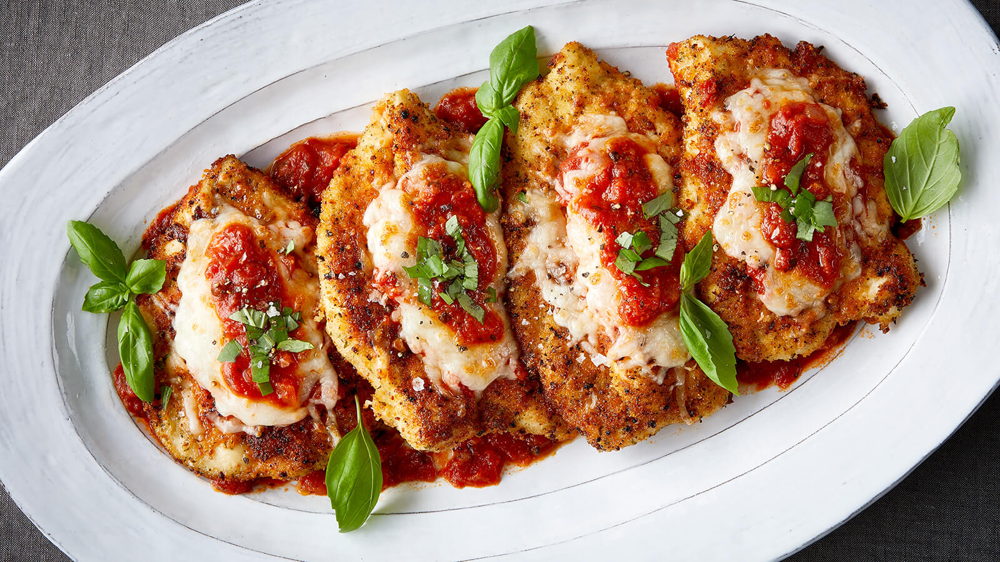

Amazing Chicken Marsala!

Original recipe by redbirdfarms
Ingredients
- 1 3/4 cups reduce sodium chicken broth
- 2 tablespoons finely chopped shallot
- 5 tablespoons unslated butter
- 10 oz. cremini mushrooms, thinly sliced or mushrooms of your choice
- 1 1/2 tablespoons finely chopped fresh sage
- 2 cloves garlic, minced
- 1/4 teaspoon salt
- 1/8 teaspoon black pepper
- 1 cup all-purpose flour
- 4 Red Bird Farms Boneless Skinless chicken breasts (2 lb total)
- 2 tablespoons extra-virgin olive olive
- 1/2 cup plus 2 tablespoons dry Marsala wine
- 2/3 cup heavy cream
- 1 teaspoon fresh lemon juice
Directions
- Put oven rack in middle position and preheat oven to 200°F.
- Bring broth to a boil in a 2-quart saucepan over high heat, then boil, uncovered, until reduced to about 3/4 cup, about 20 minutes.
- Cook shallot in 3 tablespoons butter in an 8- to 10-inch heavy skillet over moderate heat, stirring, until shallot begins to turn golden, about 1 minute. Add mushrooms, 1 teaspoon sage, garlic, salt, and pepper and cook, stirring occasionally, until liquid mushrooms give off is evaporated and mushrooms begin to brown, about 7 minutes. Remove from heat.
- Put flour in a wide shallow bowl. Gently pound chicken to 1/4 inch thick between 2 sheets of plastic wrap using the flat side of a meat pounder or a rolling pin.
- Pat chicken dry and season with salt and pepper, then dredge in flour, 1 piece at a time, shaking off excess. Transfer to sheets of wax paper, arranging chicken in 1 layer.
- Heat 1 tablespoon each of oil and butter in a 10-inch heavy skillet over moderately high heat until foam subsides, then sauté half of chicken, turning over once, until golden and just cooked through, about 4 minutes total. Transfer cooked chicken to a large heatproof platter, arranging in 1 layer, then put platter in oven to keep warm. Wipe out skillet with paper towels and cook remaining chicken in same manner, then transfer to oven, arranging in 1 layer.
- Add 1/2 cup wine to skillet and boil over high heat, stirring and scraping up brown bits, about 30 seconds. Add reduced broth, cream, and mushrooms, then simmer, stirring occasionally, until sauce is slightly thickened, about 7 minutes. Add lemon juice and remaining 2 tablespoons wine and 1/2 teaspoon sage.
- Serve chicken with sauce.